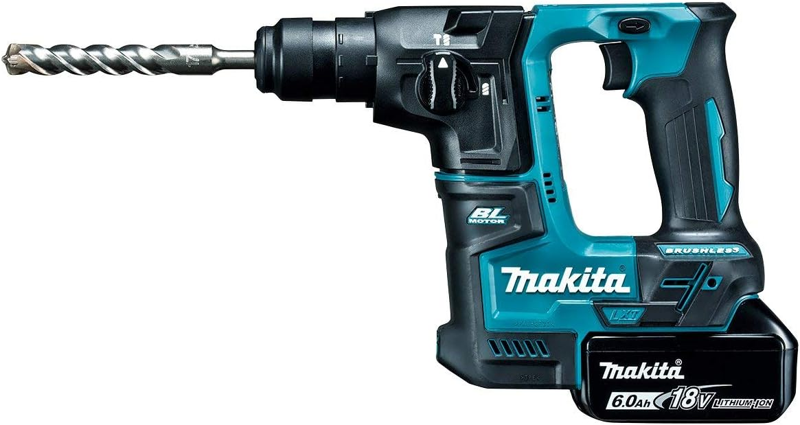
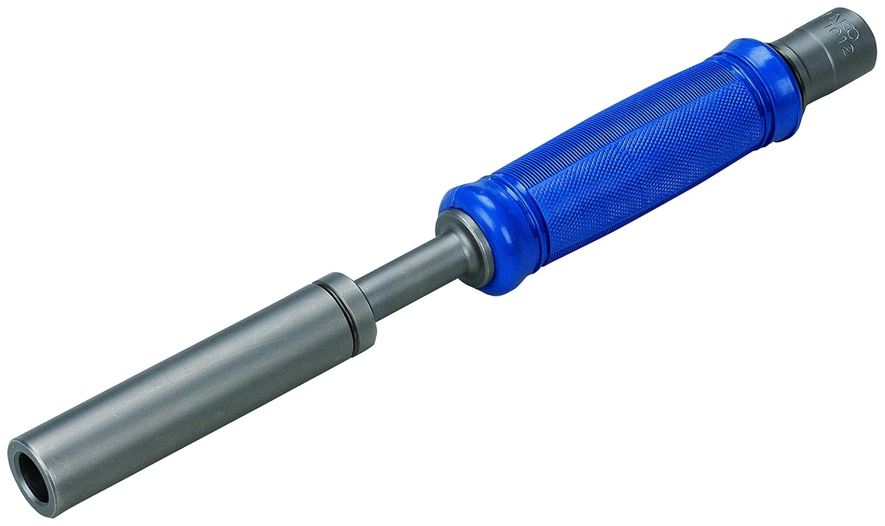

向いている人
- これからアンカー固定を本格的に始める人
- ハンマドリルのサイズ感で迷っている人
- 穴あけと打ち込み補助工具をまとめて見たい人
アンカー固定の工具選びは、ただ大きいハンマドリルを選べばいいわけではありません。
盤や操作盤の固定が中心なのか、ラック固定まで見るのか、オールアンカーの打ち込み作業まで多いのかで、必要な工具は変わります。
盤固定中心なら取り回し重視、ラック固定まで見るなら余裕重視、打ち込み系アンカーが多いなら補助工具も合わせて考えると失敗しにくいです。

先輩アンカー固定は「穴をあける工具」と「打ち込みを安定させる工具」を分けて見ると、かなり選びやすいよ。

新人ハンマドリルだけ見ていました。打ち込み補助工具も一緒に見るんですね。
現場目線では、次の3つで分けるとかなり判断しやすいです。
取り回しやすいハンマドリルを優先。狭い場所や機器まわりでも扱いやすいものが向いています。
少し余裕のあるクラスを選ぶと、盤固定以外の作業にも対応しやすくなります。
ハンマドリルだけでなく、ハンドホルダーのような補助工具も合わせると施工が安定しやすいです。
頻度が低いなら必要最小限から。頻度が高いなら作業効率と疲れにくさも重視します。
細かい数値よりも、どんな固定作業で使いやすいかを中心に比較します。
| 工具 | 向いている場面 | 現場目線の使い分け |
|---|---|---|
| HR171DRGX | 盤・操作盤の固定 | 取り回し重視。最初の1台として選びやすい。 |
| HR182DZKB | 盤固定＋ラック固定 | 対応幅を広げたい人向け。少し余裕を見たい時に候補。 |
| ハンドホルダー 2H | オールアンカー施工 | 打ち込み作業を安定させたい時に便利な補助工具。 |
盤固定中心ならHR171DRGX、ラック固定まで見るならHR182DZKB、打ち込み系アンカーが多いならハンドホルダーも合わせて見るのが分かりやすいです。
ここでは、現行記事の商品画像パスを維持し、Amazonリンクは提供いただいた短縮リンクへ差し替えています。

盤や操作盤まわりの固定が中心なら、扱いやすさと取り回しのバランスが良く選びやすいモデルです。
壁際や機器周辺でも扱いやすいサイズ感で、アンカー固定用の最初の1台として候補にしやすいです。
重すぎる工具よりも、普段の固定作業で持ち出しやすいものを選びたい人に向いています。
AmazonでHR171DRGXを見る
盤固定に加えて、ラック固定や吊り金具まわりまで視野に入れたい時に選びやすいモデルです。
17mmクラスより少し余裕を持って使いやすく、現場ごとの用途差に対応しやすいのがメリットです。
1台で幅広く使いたい人や、今後の作業範囲を広めに見ておきたい人に向いています。
AmazonでHR182DZKBを見る
穴あけ後の固定作業を整える補助工具です。打ち込み系アンカーが多い人ほどメリットが出やすいです。
オールアンカー施工時の打ち込み作業を補助し、施工のばらつきを抑えたい場面で使いやすいです。
ハンマドリル本体だけでなく、こうした補助工具も合わせて考えると作業全体が安定しやすくなります。
Amazonでハンドホルダーを見るアンカー固定の工具は、作業内容と頻度で必要なクラスが変わります。買う前に次の点を確認しておくと選びやすいです。
盤や操作盤固定が中心なら、取り回しの良さを優先すると使いやすいです。
ラックや吊り金具まで視野に入れるなら、少し余裕のあるモデルを候補にします。
オールアンカー施工が多いなら、ハンドホルダーのような補助工具も検討します。
現場で頻繁に使うなら、重さやサイズ感も作業効率に影響します。
A. 必ずしもそうではありません。盤固定中心なら、取り回しの良いモデルの方が作業しやすい場面も多いです。
A. 必須ではありませんが、オールアンカー施工の頻度が高いなら効果を感じやすく、作業効率も上がりやすいです。
A. 迷ったらHR171DRGXが選びやすいです。対応幅を重視するならHR182DZKBも候補になります。
※当サイトはAmazonアソシエイト・プログラムに参加しており、適格販売により収入を得ています。